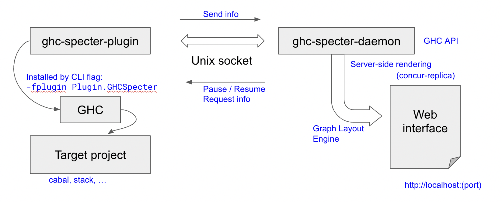

How ghc-specter works
As a plugin system that installs multiple plugins and hooks dynamically,
ghc-specter is very closely tied to the GHC internal implementation.
In this section, we will briefly overview the GHC compiler system and
exhibit how the ghc-specter-plugin works inside GHC and also show how
the ghc-specter-plugin and ghc-specter-daemon interplay.
Background on the GHC Pipeline
GHC operates in multiple different modes and each invocation of the GHC process consists of a sequence of operations called phases in the pipeline. Roughly speaking, what each phase/sub-phase does is to transform an intermediate representation of a given program to another lower-level intermediate representation until it is finally transformed to an assembly or similar (for example, LLVM-IR) so that it can be consumed by external standard tools to create an executable binary object. The process varies in different modes undoubtedly.
The compilation also depends on the configuration environment many of which are set up via
CLI flags. Over the course, the pipeline enriches (and simplifies if unnecessary) its internal
state which consists of unique identifiers, names and type checking information.
All of this persistent or transient information are of the interest of ghc-specter and we
will try to capture and dump the information as requested. To hijack the pipeline, we rely on
the GHC pipeline via the GHC plugin mechanism to install such inspection procedures.
In the following, we expand the above description in detail. Note that The information here is presented for the sake of overview and mainly based on the GHC 9.4 implementation, and is neither precise nor comprehensive. In addition, for GHC 9.2, there are significant differences – in particular, the GHC phases, – so one should refer to the GHC documentation and the source code for more accurate information.
GHC Mode
When invoked from the Command-Line-Interface (CLI), GHC is run in a certain mode. As we all are familiar, GHC can be used as both compiler and interpreter. In fact, this is one of the special luxurious features of GHC that we Haskell developers all enjoy. GHC compiler seamlessly integrates the interpreter read-eval-print-loop (REPL) session. GHC interpreter and the Run-Time-System (RTS) allows one to mix interpreted codes with other precompiled native binary bytecode.
The compiler mode (or batch mode) can be run (i) in compilation manager mode
(--make) in which a single GHC session will make a build plan (by topolically
ordering module graph) and compile a group of modules associated with their source
codes, or (ii) in oneshot mode (-c) in which only a single module is built for
that GHC process. As the compilation starts, per module, a single GHC pipeline
is carried out in a sequence of phases as explained in the next subsection.
The interpreter mode compiles source codes or load precompiled modules dynamically from the user demand in a REPL session. Therefore, the interpreter mode is a trampoline process between a REPL session and compilation pipeline. When compiling a source file as demanded, the same GHC pipeline is invoked, so the plugins associated to each phase will be invoked as the compiler mode. But the backend phases for generating Cmm and assembly codes and linking is not performed since it is unnecessary.
Phases and internal representation
A single module is being compiled in a single pipeline thread. In large chunks, the pipeline consists of the frontend phases, the backend phases and the external assembler/linker phases. The frontend phases starts with source codes, and parsing, typechecking, desugaring, and results in GHC Core. The GHC Core is optimized in a few Core-to-Core passes. Then, the backend phases generate the STG and Cmm representation, and finally generates assembly codes or LLVM IR depending on the configuration. Afterwards, the external assembler and linker (such as gcc or clang toolchain) will create a linkable binary.
The frontend phase may start with a preprocessor (such as hsc2hs). The
compilation may end before the external linking process. For example, for the
GHC interpreter mode, the compilation ends with producing bytecode binary and then
the interpreter RTS will load and execute the bytecode directly.
{kind=link}
We list the relevant phases as defined in the GHC API 9.4 in the following:
Cpp,HsPp: C and Haskell preprocessor
Hsc: Haskell frontend compiler up to type-checker
HscPostTc: Haskell frontend compiler after type-checker
HscBackend: Core backend compiler
Cmm: C– compiler
As: External assembler
LlvmOpt,LlvmLlc,LlvmMangle: LLVM
MergeForeign: linker for foreign source
In each phase, there can be smaller steps, which is called a pass in the GHC terminology.
In the above, we briefly mentioned that each compilation phase produces a certain intermediate representation of the Haskell program. In a sense, the compiler is a sequence of transformation steps of such representations:
Source code and preprocessed code stored in file text file
HsParsedModulecontaining High-level Haskell declaration ASTHsDecl(containingHsBindandHsExpr) annotated withHsc-phase-specificpass-dependent information. Here,passis progressed fromParsedthroughRenamedtoTypechecked.GHC-Core-level
CoreProgramwhich consists of a list ofCoreBind(containingCoreExpr)STG-level
StgTopBinding(StgBinidngandStgExpr)Cmm-level
CmmDeclGenerated assembly or LLVM bitcode in generated files
Environment and state
Various configurations are determined before kicking off the compilation process. The CLI parameters
are parsed and adjusted (by default or determined by system environment) with a few dynamically linked
objects – GHC plugins are such objects. The resultant configuration is stored in DynFlags data type,
so making the content of DynFlags available to users is very useful.
GHC is invoked in the CompManager mode, then the module dependency graph is analyzed and topologically
sorted. Then, each module compilation is swept over the ordered list with the global shared environment
HscEnv. The module graph information is stored in ModGraph.
Right after parsing the source code, the names in the parsed module are extracted but not yet bound to known
imported/declared names, and conflicting names are not resolved with unique IDs. Therefore, the compiler
does the Renamed pass. The information extracted and resolved should be accumulated into a global map,
GlobalRdrEnv. After the name resolution and issuing unique IDs, typechecker pass will follow and develop
another global map as a part of compilation state, collecting typechecking evidences.
Combining such maps with the fully resolved Haskell AST, the accumulated TcGblEnv is produced as the
result of the frontend typechecker and passed to the HscPostTc phase.
Plugins and Hooks
GHC plugin, by which one can insert a custom code at a predefined plugin location in the compilation
GHC hooks, with which, one can replace a particular segment of compilation by a custom code.
ghc-specter System Design

{kind=link}
The left figure shows the configuration of ghc-specter application. The GHC plugin
ghc-specter-plugin is instantiated by invoking GHC with the CLI argument
-fplugin Plugin.GHCSpecter. The daemon process ghc-specter-daemon should
be running as a separate process before the plugin instantiation.
As designated by a configuration file (ghc-specter.yaml by default), the
communication channel through a Unix socket between GHC and the daemon is
established.
We use driverPlugin as the starting point, and the plugin will install plugins and hooks dynamically.
As plugins, parsedResultActionPlugin, renamedResultAction, spliceRunAction, tcPlugin, typecheckPlugin, corePlugin that installs CoreToDo actions
interleaved with existing CoreToDo steps.
As hooks, we use runPhaseHook, runMetaHook, runPhaseHook.
The daemon is a web server to present the contents from ghc-specter-plugin.